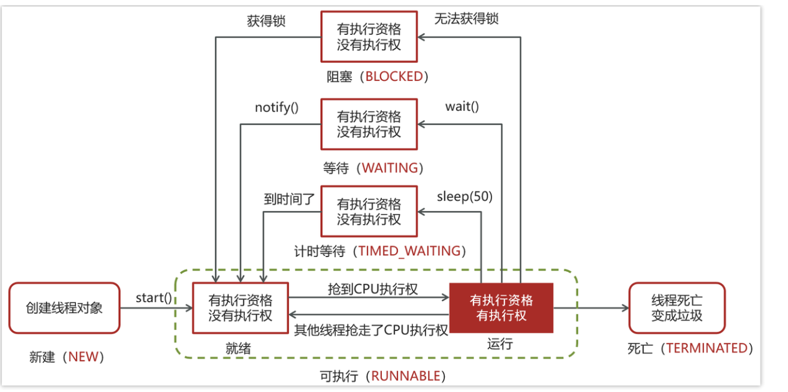

线程
线程基础
进程是什么，线程是什么，两者有什么区别？
进程作为资源分配的最小单位，线程作为最小调度单位
进程是正在运行的程序的实例，进程中包含了线程，每个线程执行不同的任务
不同的进程使用不同的内存空间，在当前进程下的所有线程可以共享内存空间
线程更轻量，线程上下文切换成本一般要比进程上下文切换低(上下文切换指的是从一个线程切换到另一个线程）
并发和并行的区别？
并发是在同一时间应对多件事情的能力
并行是在同一时间做多件事情的能力
创建线程的方式
继承Thread类，实现runnable接口，实现Callable接口，线程池创建(项目常用)
1
2
3
4
5
6
7
8
9
10
11
12
13
14
15
16
17
18
19public class MyThread extends Thread {
public void run() {
System.out.println("MyThread...run...");
}
public static void main(String[] args) {
// 创建MyThread对象
MyThread t1 = new MyThread() ;
MyThread t2 = new MyThread() ;
// 调用start方法启动线程
t1.start();
t2.start();
}
}1
2
3
4
5
6
7
8
9
10
11
12
13
14
15
16
17
18
19
20
21
22
23public class MyRunnable implements Runnable{
public void run() {
System.out.println("MyRunnable...run...");
}
public static void main(String[] args) {
// 创建MyRunnable对象
MyRunnable mr = new MyRunnable() ;
// 创建Thread对象
Thread t1 = new Thread(mr) ;
Thread t2 = new Thread(mr) ;
// 调用start方法启动线程
t1.start();
t2.start();
}
}1
2
3
4
5
6
7
8
9
10
11
12
13
14
15
16
17
18
19
20
21
22
23
24
25
26
27
28
29
30
31
32public class MyCallable implements Callable<String> {
@Override
public String call() throws Exception {
System.out.println("MyCallable...call...");
return "OK";
}
public static void main(String[] args) throws ExecutionException, InterruptedException {
// 创建MyCallable对象
MyCallable mc = new MyCallable() ;
// 创建F
FutureTask<String> ft = new FutureTask<String>(mc) ;
// 创建Thread对象
Thread t1 = new Thread(ft) ;
Thread t2 = new Thread(ft) ;
// 调用start方法启动线程
t1.start();
// 调用ft的get方法获取执行结果
String result = ft.get();
// 输出
System.out.println(result);
}
}1
2
3
4
5
6
7
8
9
10
11
12
13
14
15
16
17
18
19
20public class MyExecutors implements Runnable{
public void run() {
System.out.println("MyRunnable...run...");
}
public static void main(String[] args) {
// 创建线程池对象
ExecutorService threadPool = Executors.newFixedThreadPool(3);
threadPool.submit(new MyExecutors()) ;
// 关闭线程池
threadPool.shutdown();
}
}runnable 和callable有什么区别
Runnable 接口run方法没有返回值；Callable接口call方法有返回值，是个泛型，和Future、FutureTask配合可以用来获取异步执行的结果
Callalbe接口支持返回执行结果，需要调用FutureTask.get()得到，此方法会阻塞主进程的继续往下执行，如果不调用不会阻塞。
Callable接口的call()方法允许抛出异常；而Runnable接口的run()方法的异常只能在内部消化，不能继续上抛
线程包括哪些状态，状态之间是如何变化的

线程的 run()和 start()有什么区别？
start(): 用来启动线程，通过该线程调用run方法执行run方法中所定义的逻辑代码。start方法只能被调用一次。
run(): 封装了要被线程执行的代码，可以被调用多次。
- 在 java 中 wait 和 sleep 方法的不同？
共同点
- wait() ，wait(long) 和 sleep(long) 的效果都是让当前线程暂时放弃 CPU 的使用权，进入阻塞状态
不同点
方法归属不同
- sleep(long) 是 Thread 的静态方法
- 而 wait()，wait(long) 都是 Object 的成员方法，每个对象都有
醒来时机不同
- 执行 sleep(long) 和 wait(long) 的线程都会在等待相应毫秒后醒来
- wait(long) 和 wait() 还可以被 notify 唤醒，wait() 如果不唤醒就一直等下去
- 它们都可以被打断唤醒
锁特性不同（重点）
wait 方法的调用必须先获取 wait 对象的锁，而 sleep 则无此限制
wait 方法执行后会释放对象锁，允许其它线程获得该对象锁（我放弃 cpu，但你们还可以用）
而 sleep 如果在 synchronized 代码块中执行，并不会释放对象锁（我放弃 cpu，你们也用不了）